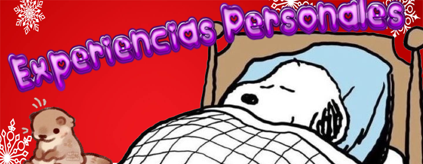

La Navidad es una epoca que nos invita a reflexionar sobre la importancia del amor, la generosidad y la union familiar. Es un momento para compartir con seres queridos y recordar los valores que nos hacen mejores personas. La magia de la Navidad radica en la esperanza y en el deseo de construir un mundo mas amable y solidario, donde todos puedan disfrutar de momentos de felicidad y paz.

Una de las experiencias mas memorables que tengo de la Navidad es la union familiar que se genera al decorar el arbol y preparar la cena juntos. El ambiente se llena de risas y recuerdos, mientras se comparten anecdotas y se crean nuevas memorias. Este tiempo especial me recuerda la importancia de valorar a quienes tenemos cerca y de expresar nuestra gratitud por su compania y amor.